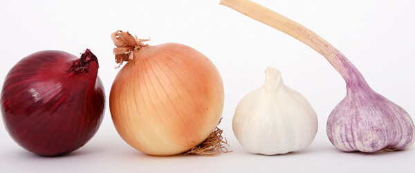
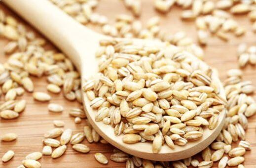
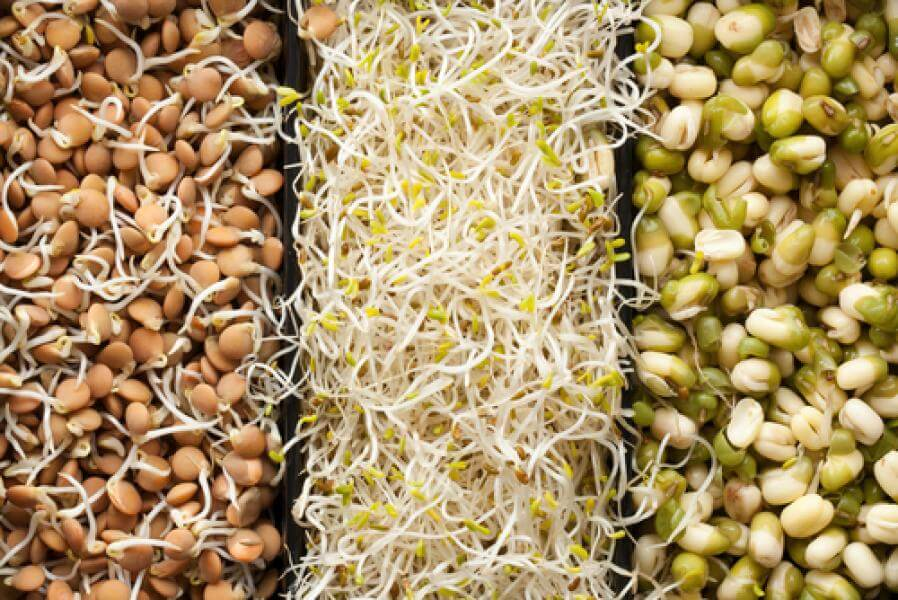
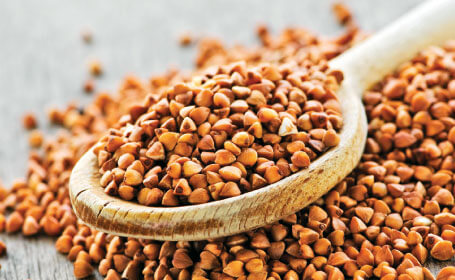
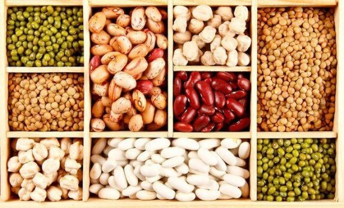
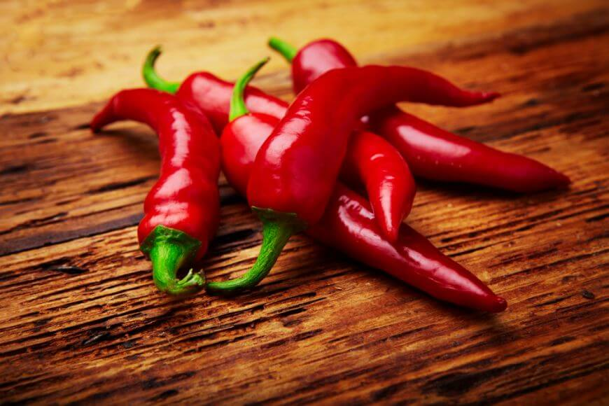
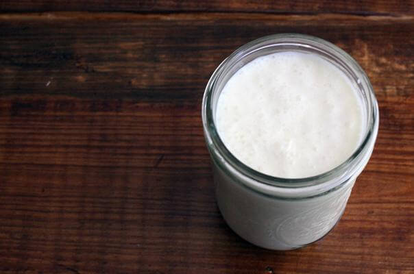
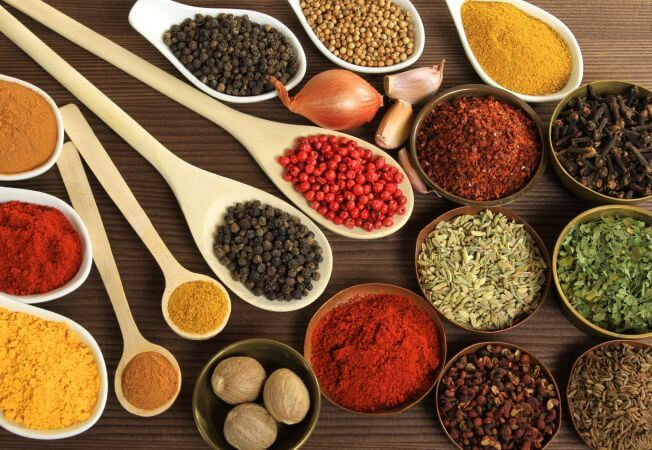

Din dorinta de a fi vesnic frumoase, tonice si energice, am studiat in ultima vreme ce anume produce imbatranirea? Cum poate fi aceasta intarziata si care sunt cele mai bune remedii, sunt informatii pretioase pe care eu ti le ofer in articolul de mai jos in care am pus mult studiu si suflet.
Cercetatorii ne recomanda ca alimentatia noastra sa fie formata din alimente care inhiba procesul de inflamare sau care determina o dezinflamare a celulelor din organism. Sa ne mentinem greutatea la un nivel normal si sa ne ascultam corpul. Durerile de cap, oboseala de dimineata nu sunt normale, sunt semne clare ca ceva se petrece in organism.
Acai este fructul minune ce are cele mai nutritive si sanatoase substante din lume. Este extrem de bogat in antioxidanti, aminoacizi si acizi grasi esentiali similar cu cel gasit in uleiul de masline.
Pulpa de acai contine de 10 ori mai multi antioxidanti decat strugurii rosii si pana la 30 ori mai multe antocianine decat vinul rosu.
Gasesti caserola de fructe acasi proaspete la supermarchet sau pot alege sa cumperi fructele congelate. De asemenea o varianta ieftina ar fi sa cumperi suc din pulpa de acai (30 lei-50 lei), dar ai grija sa nu aiba ados de zahar. Eu pastrez o sticla de suc concentreat langa cafetiera, iar dimineata in paralel cu cafeaua imi pregatesc si un pahar in care pun 30 ml de suc si completez cu apa. Formand acest obicei reusesc sa ma tin de plan.
2.Ceapa, usturoiul, prazul si arpagicul Aceste legume stimuleaza producerea de glutation, tripeptita care este cel mai puternic antioxidant al ficatului. Ajuta la scaderea colesterolului, miscoreaza tensiunea, distruge virusii si bacteriile (usturoiul este un antibiotic natural).
Prazul este faimos pentru stabilizarea glucozei in sange, incetinind absorbtia zaharurilor si asigurand metabolizarea corecta a acestora.
o varianta simpla si sanatoasa este sa obisnuiesti sa consumi zilnic o salata de ceapa cu rosii ca si garnitura la un gratar de pui sau de curcan. De asemenea asezoneaza pestele cu usturoi si prepara un mujdei romanensc. Te vei alege cu o masa delicioasa care va aduce si un aport de antioxidanti absolut necesari pentru un organism sanatos.
3. Orzul Aceasta cereala are un indice glicemic scazut, ajuta organismul sa metabolizeze grasimile, colesterolul si carbohidratii. Asigura sanatatea tractului digestiv si reduc riscul de aparitie a cancerului la nivel digestiv.
Eu obisnuiesc sa imi fierb arpacas de orz, la care adaug miez de nuca si o lingura de miere. Este un mic dejun sanatos si delicios. Incearca si tu!
4. Germinatele O suta de grame din germinatele plantelor contin mai multi fitonutrienti benefici pentru sanatate decat aceeasi cantitate de vegetale verzi. Clorofila din alimente inhiba bacteriile cauzatoare de boale sa se dezvolte.
De asemenea praful de spirulina, iarba de grau, chlorella reprezinta o sursa superioara de proteine, clorofila si antioxidanti. Un boost de energie vei primi daca pui o lingura din aceste minuni in shake-ul tau zilnic.
Desi pare greu, este simplu sa introduci in alimentatie germeni de tot felul de plante. Pune intr-o farfurie seminte bio de grau/hrisca/fasole/varza/brocoli/ridiche si adauga zilnic putina apa. Semintele vor incolti. Consuma germenii de seminte dupa 4-7 zile de la data la care le-ai pus la germinat. Asa te vei bucura de toti nutrientii sai.
5. Hrisca Hrisca are un continut mai mare de proteine decat orezul, graul, mieul sau porumbul si e bogata in aminoacizii esentiali denumiti lisina si arginina. Profilul aminoacidic unic al acestei plante ii confera capacitatea de a mari valoarea proteica a legumelor cu boabe sau cerealelor mancate in aceeasi zi.
Incearca budinca de hrisca care este simplu de facut si intr-adevar delicioasa.
6. Fasolea, nautul, soia, mazarea, lintea Legumele cu boabe sunt proteine excelente, au un continut scazut de grasimi si furnizeaza cantintati suficiente de fibre alimentare, carbohidrati complecsi si omega-6. Este recomandabil sa mancati zilnic o jumatate de cana de legume cu boabe. Au potasiu, acid folic si antioxidanti.
Obisnuiesc sa las fasolea sau nautul la inmuiat cu o seara inainte. A doua zi, imediat ce ajung acasa de la serviciu, o pun la fiert. Apoi imi fac salata de fasole sau pasta de naut (hummus) in care adaug ardei iute si muguri de pin.
7. Ardeiul iute Toate soiurile de ardei au proprietati antiinflamatorii, analgezice, anticancerigene si de mentinerea sanatatii inimii. Capsaicina, substanta activa din ardeiul iute combate durerile de cap, reduce durerile artritice, calmeaza congestia nazala si arde grasimile.
Ardeiul iute are de 2 ori mai multa vitamina C decat citricele.Daca doresti sa iti ti sub control greutateam, fara sa te infometezi, sa faci pielea mai ferma si stralucitoare, semintele sunt solutia. Foarte important urmatorul detaliu: neprajite si nesarate. Pune in salata sau in shake o lingura de semintele tale preferate. 100 grame de seminte au 500 de calorii, asa nu exagera cu marimea portiei. Aceste seminte au continut mare de arginina, care duce la reducerea nivelului de colesterol si ridica starea de spirit, la propriu.
Pentru a maximiza valoare nutritiva tine-le in apa sarata timp de 6-8 ore, apoi scurge-le si usuca-le intr-o tava in cuptor, la temperatura scazuta.
Incearca sa te bucuri de un boost de vitamine consumand in weekend un mic dejun deosebit de simplu, dar foarte bogat in vitamine. Citeste articolulCe mananc la mic dejun in weekend?
9. Iaurtul si chefirul Procesul de imbatranire este accelerat de toxinele secretate de bacteriile rele din organism, care induc descompunerea si fermentarea alimentelor in intestine. Iaurtul si chefirul au probiotice, bacterii inofensive care ajuta la digerarea corecta a alimentelor. Chefirul este folosit si astazi in spitale din fosta Uniune Sovietica pentru a trata tulburari digestive, ateroscleroza, tuberculoza, cancer.
Evita iaurturile ce contine agenti de ingrosare si stalibizatori. De asemenea nu manca iaurt ambalat cu fructe, decat daca e ziua ta. Contine o multime zaharuri suplimentare.
10. Oregano, marar, foi de dafin, coriandru, cimbru, piper negru, ghimbir, chimion Condimentele sunt un dar al naturii de care trebuie sa ne bucuram si sa profitam maxim. Fiecare condiment are proprietati spectaculoase menita sa ajute organismul sa functioneze perfect. Pe vremuri, scortisoara si alte mirodenii era vanduta scump, iar doar imparatii aveau acces la ele.